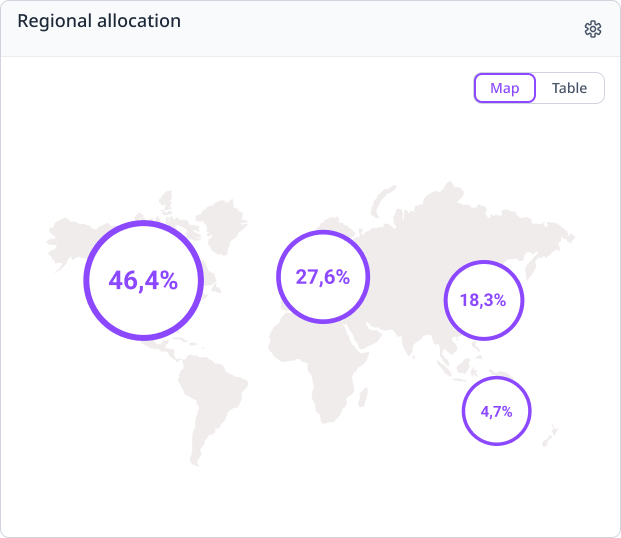
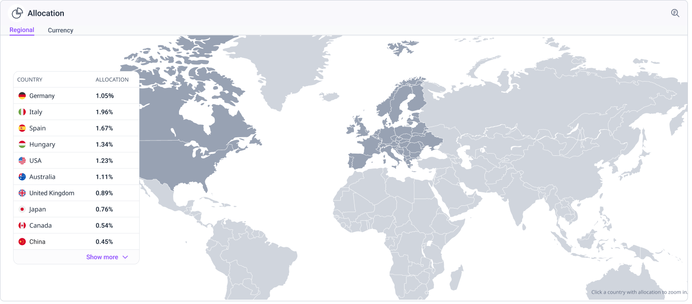
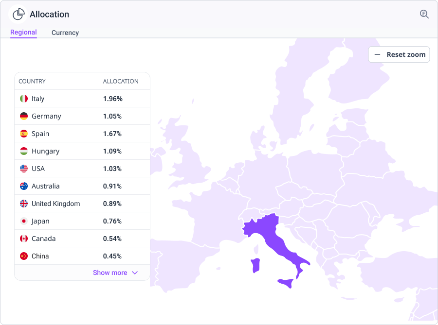
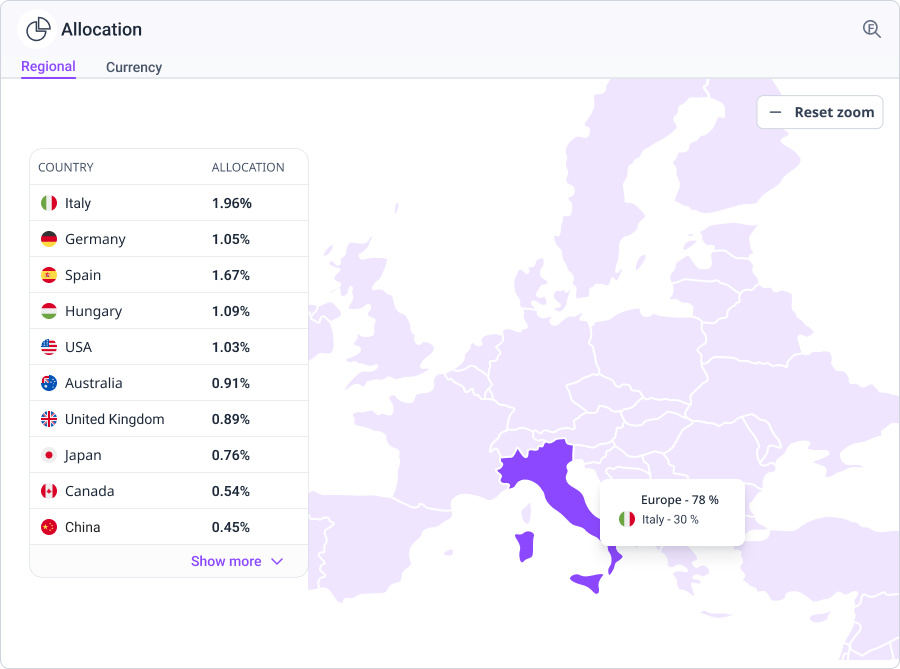
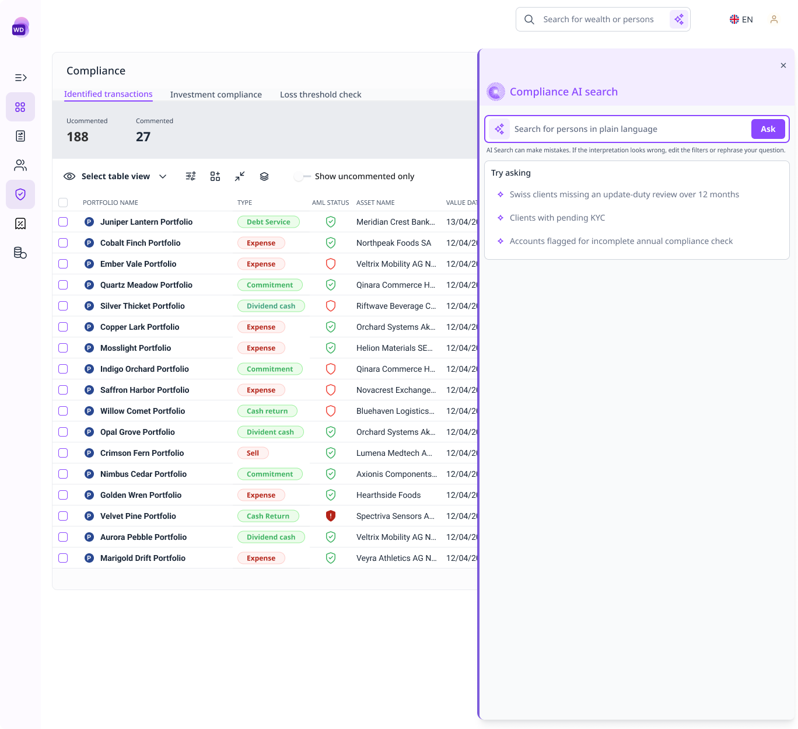
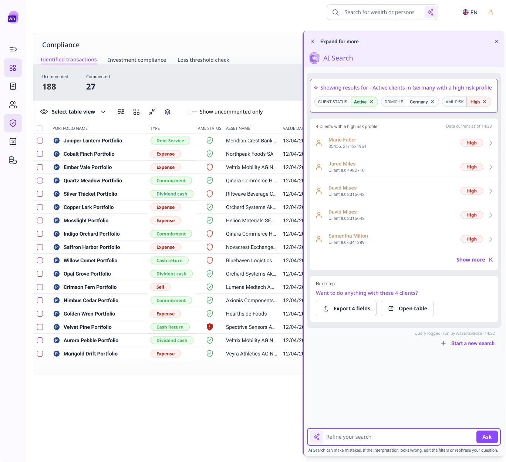
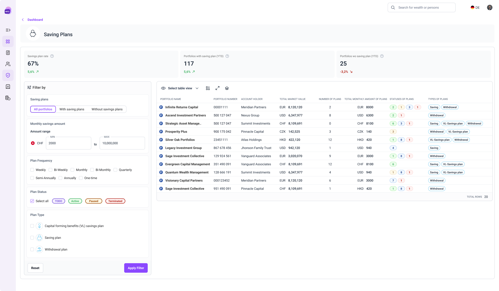
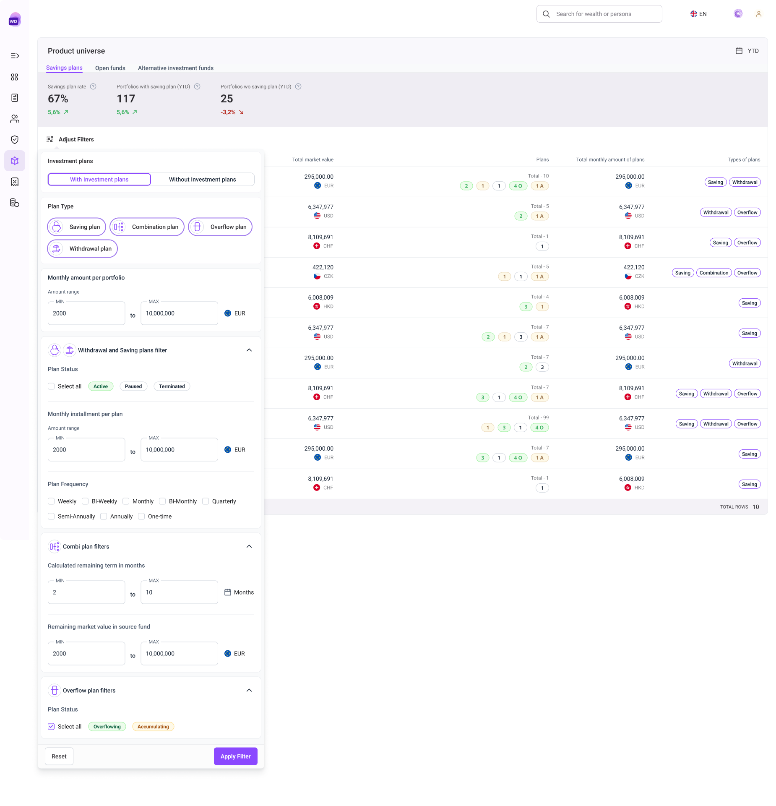

Redesigning a wealth platform that was already live
Wealth Discovery was in production before I joined it. My work is improving the parts that stopped holding up and designing new ones as the product grows — inside an existing codebase, an existing user base, and a shared design system.
Overview
Wealth Discovery is an advisory and portfolio-analytics platform built at Etops. Wealth managers, advisors, and asset managers use it to review portfolios, understand how wealth is distributed, and prepare for conversations with their clients.
I joined after the product was live. The foundations, the core flows, and most of the interface were already there, built by the people before me. My work is redesigning the parts that no longer hold up and designing new features as the product grows.
Working inside a product I didn't start
This is a different problem from opening a blank file, and in some ways a harder one. Every screen already has users, established behaviour, and a reason it was built that way. Changing something means understanding the original decision first, then making a case for a better one to a PM, to developers who have to build it, and against a roadmap that is already full.
I also work in a design team of four maintaining a shared design system across more than fourteen Etops products. Anything I change in Wealth Discovery has to hold up inside that system too, so the question is never only whether a solution works on this screen.
What follows is one piece of that work in detail.
Regional allocation
Portfolio Overview · June 2026
A map that showed regions and hid countries

The original Regional Allocation widget placed large percentage bubbles over broad geographic areas of a world map. A wealth manager could see that a significant share of a portfolio sat somewhere in Europe, but not which countries made up that number.
The widget communicated regional concentration and hid everything underneath it. My PM asked me to make country-level allocation easier to read without adding levels of drill-down. I owned the UX and UI of the redesign.
The original view answered at the level of a continent. The redesign moves the same question down to the level a wealth manager actually works at.
The obvious fix, and why I passed on it
The first direction I considered was keeping the bubbles and making them interactive. Click Europe, reveal the European countries inside it.
I decided against it. That approach delivers detail after a click, but the default state stays abstract. A user still has to interact with the map just to find out where their portfolio actually is. The weakness was never the lack of interaction. It was what the widget said before anyone touched it.
So rather than layering interaction on top, I reconsidered what the default view should show.
Two elements, two jobs
I replaced the percentage bubbles with a real geographic representation. Countries holding allocation render in the stronger brand purple. Countries without it stay quiet. A table sits permanently beside the map with country names, flags, and exact percentages.
The split is deliberate. The map answers where the portfolio is allocated. The table answers how much. Neither element tries to do both, which is what let me drop the bubbles without losing the precise numbers they carried.

Nothing here required a click. The countries and their figures are readable on arrival, which was the point of the change.
Zoom as optional context
Users can look closer when they want to. Selecting a region zooms smoothly into it, for example from the world into Europe.
In the zoomed state, the surrounding continent renders in the lighter brand purple to hold geographic context while allocated countries stay darker. Hovering a country brings up a tooltip with its flag and allocation. The table stays in place on the left, and a visible reset returns to the global view.
I kept this shallow on purpose. This is a Portfolio Overview widget, not a mapping application, so there is one optional step down and no deeper path to get lost in.


From prototype to build
The design depended on movement and state changes, so static screens were not going to survive handoff. I built an interactive prototype covering the zoom, the map states, hover behaviour, the colour hierarchy, and reset.
I presented the direction to the wider team and we agreed to move forward with it. I then walked developers through the prototype, reviewed the built version, and wrote follow-up requirements where the behaviour needed correcting. The widget shipped in June 2026 and was well received internally.
AI Search for compliance
Compliance workspace · Live
A shortcut for the question officers ask every day
The compliance workspace is where a small team monitors thousands of clients for regulatory risk: anti-money-laundering exposure, KYC gaps, sanctions checks, activity anomalies. The job is a version of the same question asked repeatedly. Who needs a closer look today?
Filters already answered these questions well. To find active clients in Germany with a High AML risk, an officer opened the filter panel, chose Status, selected Active, added Domicile, selected Germany, added AML Risk, selected High, applied. It works, and for anything genuinely complex it is still the better tool. But for the quick, repeated client lookups that fill an officer's day, it meant rebuilding the same chain tomorrow with different values and again next week for a variant.
The brief was one line: let them ask the question directly.
Worth being precise about the scope, because it shaped what I built. AI Search covers client search. It is an additional, faster route to a result, not a replacement for filtering. Filters remain the tool for complex structured queries and for everything beyond clients, including portfolios and mandates, and they can express conditions the natural-language layer cannot reach. The goal was a shortcut for the common case, sitting alongside the existing system rather than on top of it.
That sounds simple, and it isn't. In compliance a wrong answer is not an inconvenience, it is a reason for an audit finding. If the system quietly misread a query and returned the wrong client list, the officer would find out when a regulator told them. That risk shaped nearly every decision here.

Two routes to the same list. The point was to make the short one available, not to retire the long one.
Two groups pulling in opposite directions
Full-time officers already knew the filter schema and wanted speed. To them natural language could easily read as a downgrade, and every confirmation step is a tax on someone who could have built the filter faster by hand. They also had the option to ignore the feature entirely, which meant it had to earn its use rather than assume it.
Occasional users, the auditors and reviewers spot-checking a report, did not know the schema. They needed to see that the results matched the question they asked.
Designing for either group alone loses the other. The feature had to be quick enough for daily use and legible enough for someone opening it once a quarter.
Six decisions
Show the interpretation as chips, not a sentence. Most tools paraphrase the query back: "Showing active clients domiciled in Germany with High AML risk." It reads well and it hides the thing that matters, because the user cannot tell whether High mapped to AML risk or credit risk. I showed the interpretation as one chip per criterion instead, structured and plain, so it can be checked at a glance and corrected piece by piece rather than retyped.
Surface what the system could not do. Some parts of a natural query have no structured field behind them. "Clients who haven't completed KYC verification" is one. The most dangerous available behaviour is to drop that silently and return results anyway, because the officer believes they have a complete answer. So the drawer names the gap directly: that phrase is not a structured field, so it was not used to filter these results. The user knows what the list covers and what it doesn't.
Label every value. Compliance data is dense with badges, IDs, dates, and statuses. A red High chip means nothing without AML risk beside it. The rule for this feature is that no value appears without its label, which removes the need for institutional memory and keeps the drawer readable for the quarterly reviewer.
Two densities on the result card. Officers scan long lists and act on single clients. The collapsed card carries identity essentials only: name, ID, risk badge. Expanding it brings type, domicile, advisor, contact, and dates. Scannable while moving, detailed when stopping.
One consolidated follow-up. After results appear, officers usually export, open the full table, or refine. Rather than stacking those as competing prompts, one line asks whether they want to do anything with the results and the actions follow as chips. Same options, fewer decisions on screen.
A quiet audit stamp. Every query shows who ran it and when. That is a compliance requirement first. I also expect it to nudge people toward more careful queries, since a name and timestamp sit on the output, though that is an intention rather than something I can claim.

The interpretation is inspectable before anyone acts on it, and a term the system could not map is stated rather than dropped.
What I designed against what shipped first
Not every decision made V1. Engineering was clear early about what the first release could carry, so I designed the full pattern and then a leaner V1 that would not undermine it.
V1 chips are read-only. The interpretation is visible, but a misread query has to be retyped. V2 makes them removable, so clearing Germany re-runs the search without that criterion.
V1 names the unmappable part of a query without offering a way forward. V2 turns that warning into an action, suggesting the closest available filter as a tappable pill.
V1 cards show name, ID, and risk. Richer client data was the most common request once people saw the design, and the extended card was already drawn, waiting on the schema work.
None of this was disagreement. Engineering wanted the same feature and was realistic about the first release, so the compromises were scope calls that V2 could layer onto without a redesign.
A shape, not a chat
A threaded chat interface was on the table early. I moved away from it because in compliance the artefact is not the conversation, it is the filtered list that gets attached to a report or handed to an auditor. A transcript makes that list harder to export, harder to defend, and harder to reuse.
The surface stayed structured. The system still communicates, but through chips, states, and results rather than a log.
Interactive prototype built with Lovable, showing the full AI Search flow from input through follow-up actions.
Where it is now
The feature is live in the compliance workspace. The second release restores the editable chips, the actionable warning, and the extended card.
We tested the flow during design with people who use the product. It read as easy to follow, and the response was less about whether it worked and more about what it would be able to do next, which is a reasonable signal for a first release. Requests for richer client data were the most frequent, and they are already designed into V2.
Two questions I could not settle from a Figma file are now in front of real usage: which result-card density holds up in daily work, and whether the audit stamp actually changes how queries get written.
Product Universe
Portfolio exploration · Live
Analysing portfolios by the products inside them
Product Universe is a page for exploring portfolios through the investment products they contain. Rather than opening one portfolio at a time, an advisor can ask which portfolios hold savings plans, which hold none, and which match particular plan characteristics, then work from that list. Before it existed, the platform could only filter on whether a portfolio had a plan at all, and anything more specific meant exporting to a spreadsheet.
I designed the page and the filtering inside it. The first version covered savings plans, with filters for plan presence, monthly amount, status, frequency, and type.

The table carries enough about each portfolio to judge a result without opening it.
Why the filtering needed rethinking
Product Universe then expanded past savings and withdrawal plans to include combination and overflow plans, and engineering could support richer filtering than had been possible at the start. I suggested we use that room to go further than the original model, agreed the scope with my PM, and checked with the development team that it was buildable.
The expansion created a problem the first design could not absorb. Plan types do not share properties. Plan status, monthly instalment, and frequency are meaningful for savings and withdrawal plans and not for the others, which will bring attributes of their own. Adding each new field to the existing panel would have produced a long flat list with nothing to indicate which filter belonged to which product.
Plan type became the control, not another checkbox
I reorganised the panel by scope instead of treating every filter as an equal field. The user first decides whether they are looking at portfolios with plans or without. If with, they choose the plan types, and everything below responds to that choice. Detailed filters are grouped by the plan types they apply to, so plan status, monthly instalment, and frequency appear only when savings or withdrawal plans are in the selection.
That gave plan type a behavioural role it did not have before, since the selection now determines which criteria are relevant. I designed it as distinct selectable elements with the product icons users already recognise, rather than another checkbox list.

The order is the argument. Each step narrows what the next step is allowed to ask.
Two money fields at different levels
The expanded requirements introduced monthly amount per portfolio alongside monthly instalment per plan. Both are currency ranges and easy to confuse, but they measure different things. I separated them structurally rather than by wording: the portfolio-level amount stays in the general filtering area because it evaluates a total across the portfolio, while the plan-level instalment sits inside the savings and withdrawal group. Position carries the distinction more reliably than two similar labels can.
Keeping the results explainable
I ended up overlaying the filter panel on the table rather than seating it alongside. The panel opens when the user asks for it and closes once the query is set, which keeps the table at full width for the part of the task that actually needs the space, reading results.
That makes the closed state a problem to solve. A user is looking at a filtered set with the criteria no longer on screen. So I added a persistent summary of active filters above the results, organised the same way as the panel, showing both which filters are active and which product each one applies to.
One behaviour I changed before it shipped: an earlier concept left plan filters visible but disabled for portfolios without plans. Disabling signals that something is temporarily unavailable, which is the wrong message for controls that are simply irrelevant, so I removed them from that state instead.
Detailed combination and overflow filters were out of scope, but I designed them in concept to test whether the structure could take criteria it had never seen. Those filters have since been built on it, and the same pattern is planned for other Product Universe pages.